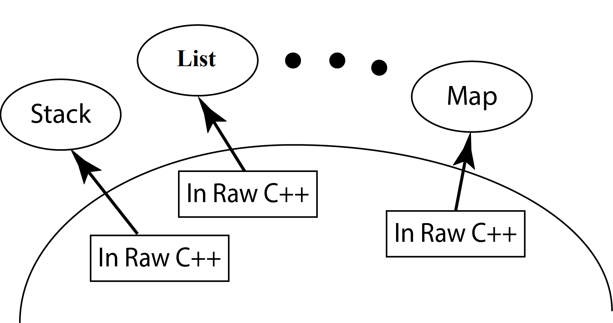
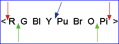

Layering a Component
0. Reference material
1. Setup
1.1 Recommendation
- Begin work in L3 project, but modify IntegerList.h so that it #includes "List\List0.hpp" and makes the instance from List0 instead of List2
- Of start from scratch and make your own project for this lab
2. L5 Statement of Work
2.1 Primary Objectives
The primary objective of this lab is to provide you experience with:
- Layering a component (e.g., List) in Raw C++
|

2.2 Specifics
Steps:
- Start Visual Studio
- Create an L5R unit test project (Instructions Here)
- Copy from you L2 project (this is the one where you developed unit tests for Sequence):
- IntegerSeq.h - put this in csse373devenv202230-yourID\LR5 folder (just created in step 2 above)
- All of the unit tests you developed for L2 (found in L2.cpp) - put these test cases in LR5.cpp
- Modify LR5's IntegerSeq.h (just copied in step 3) to #include and use Sequence2.hpp
- Begin working on Sequence2.hpp
Hints:
- Reread the Component Layering slides from Week #3 on the CSSE373 Moodle site
- Reference the Sequence specifications
- Implement all of Sequence2's stubbed out member functions
- Look for the TODO comments in Sequence2.hpp
|
Choose from these components:

|
Important Restrictions:
- Obey the correspondence - When implementing the member functions you must obey the correspondence internal contract
That means:
- assume that the correspondence holds when the member function is called
- guarantee that the correspondence holds when the member function exits
- Use Design by Contract - No defensive programming of Sequence's operations
- What this means is that the implementation of a Sequence operation must not contain code that checks to make sure that the Sequence operation was called correctly by the client
- No Cross Calling - None of Sequence's member functions are permitted to make calls to any of the other public Sequence member functions, i.e., no cross calling
- All Sequence operations should directly manipulate Sequence's data members
- Calling Down - is encouraged (but not required) by creating private member functions that capture code that starts to appear in multiple different places in your Sequence2 implementation. Do this to avoid the duplication of code
- No Recursion - None of Sequence's member functions are permitted to be recursive
- About Making Copies -
- When implementing Sequence2's operator = you must use the internal component's operator = to make a copy of the data members.
- Otherwise do not call operator = with the Sequence2 data members or with variables of type T.
3. Testing
- L5R testing
- L5R contains the test scripts that you developed for L2
- Examine the section below on Boundary Condition Testing
- Evaluate your test scripts to see how well they compare to what is stated about "good boundary condition testing"
- Develop more test cases to achieve good boundary condition testing
- This kind of systematic test case development is what a quality software engineer does. It's tedious and time consuming, but if you want to deliver quality software to your clients, this is what you do
- L5D testing
- Since you are choosing your own internal representation, you will have to create your own unit tests that test against the internal representation
- If you decide to do this kind of testing, create an L5D unit test project and configure it to run in Debug configuration
- You will need to modify Sequence2's operation << so that it outputs the values of your internal data structures when in Debug configuration - see List2.hpp or List3.hpp for an example
- Then take the test scripts from L5R and modify them so that the assert statements test against Sequence2's internal representation values
- Testing both at the L5R and 5D levels will not guarantee that Sequence2.hpp has not defects, but it will drive the number of lurking defects closer to zero
|
 |
Develop Test Cases for Boundary Condition Testing:
1) Boundaries that are at an "end" or "edge" of a non-empty container
- Good boundary condition testing in this case:
- Forces an insertion/deletion/lookup/etc. at all the edges
- Force an insertion/deletion/lookup/etc. 1 away from the edge
- Forces an insertion/deletion/lookup/etc. at least once somewhere "in the middle", i.e., not at an edge
Although this is not testing a boundary, a test for "in the middle" needs to be done, this is a steady state location

- Sequence add Example - let seq1 be the name of the sequence under test
- Add at position 0 of a non-empty sequence
- Add at position 1 of a non-empty sequence, where |seq1| >= 3
- Add at position |seq1| of a non-empty sequence
- Add at position |seq1| - 1 of a non-empty sequence, where |seq1| >= 3
- Add at position |seq1| / 2 of a non-empty sequence where |seq1| >= 2
- Do this kind of testing for all Sequence operations: add, remove, replaceEntry, entry, append, split, length
2) Empty and non-empty containers
- Good boundary condition testing in this case:
- Forces an insertion/deletion/etc. that causes the container to go from empty to non-empty and back to empty from non-empty
- Additionally, operations that have no requirement about the container's size must be able to handle both empty and non-empty container variables, e.g., append and split should work with both empty and non-empty sequence variables
- Do testing that exercises operations w.r.t. empty and non-empty containers for the Sequence operations: add, remove, append, split
The Grader's test cases:
Grading will be done running a more complete set of unit tests which will systematically stress your member function implementations
4. Submitting the Assignment for Grading
- Follow VS2022 instructions for committing and pushing your L5 project to your GitHub Education CSSE373 repo
- Use the commit message "L5 final commit, ready for grading"